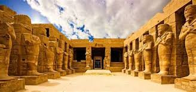
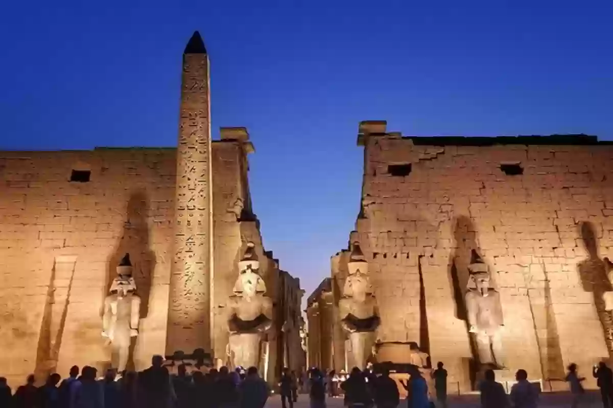
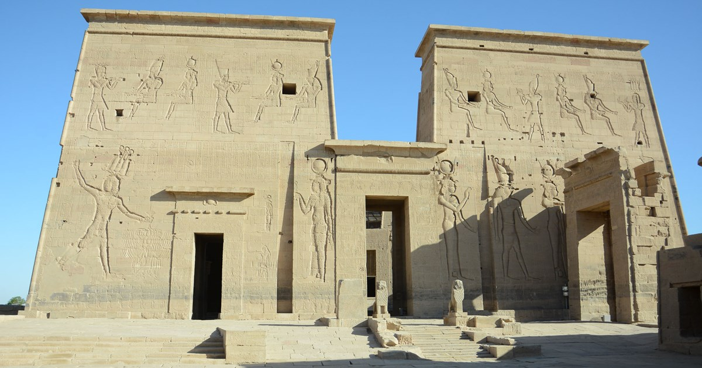

إنجازات الأثريين المصريين

اكتشاف مقبرة توت عنخ آمون
د. هوارد كارتر

ترميم معبد الكرنك
فريق الترميم المصري

التنقيب في وادي الملوك
أ. زاهي حواس

اكتشاف هرم الملك سنفرو
د. أحمد قدري

استكشاف مقابر النبلاء في طيبة
فريق الآثار المصري

اكتشاف معبد رمسيس الثاني
د. مصطفى وزيري
أسماء بعض الأثريين المصريين

د. زاهي حواس

د. أحمد قدري

د. سليمان حزين

د. مصطفى وزيري
أهرامات الجيزة

أهرامات الجيزة هي واحدة من عجائب العالم السبع. تمثل هذه الأهرامات التاريخ العريق لمصر القديمة وتعتبر من أروع الإنجازات الهندسية.
تقع أهرامات الجيزة في ضواحي القاهرة وهي تضم هرم خوفو، هرم خفرع، وهرم منقرع. تم بناء هذه الأهرامات كمدافن للفراعنة في عصر المملكة القديمة.
معبد الكرنك
معبد الكرنك في الأقصر هو معبد ضخم مخصص للإله آمون، ويعد من أروع المعابد الفرعونية.
المعبد هو مركز ديني رئيسي في مصر القديمة ويعتبر أكبر معبد ديني في العالم. يمتد تاريخ بناء المعبد لأكثر من 2000 عام.
معبد الأقصر
معبد الأقصر هو معبد فرعوني مخصص للإله آمون، وهو من أبرز المعابد في مدينة الأقصر.
يتميز المعبد بموقعه الرائع على ضفاف نهر النيل، ويضم العديد من الأثار المدهشة التي تعكس عظمة الحضارة الفرعونية.
مكتبة الإسكندرية

مكتبة الإسكندرية هي واحدة من أقدم وأشهر المكتبات في العالم، تأسست في العصور القديمة.
تعتبر المكتبة رمزًا للمعرفة والعلم، وقد دمرت في العصور القديمة. في العصر الحديث، تم إعادة بنائها لتصبح مركزًا ثقافيًا وتعليميًا هامًا.
معبد فيلة
معبد فيلة هو معبد مخصص للإلهة إيزيس، ويقع في أسوان على جزيرة فيلة.
المعبد معروف بتصميمه الفريد والجميل، وهو واحد من أهم المعابد التي تمثل الحضارة المصرية القديمة.
خريطة المواقع
اكتشف المواقع التاريخية في مصر باستخدام خريطة جوجل. يمكنك تكبير وتصغير الخريطة للتحقق من المواقع المختلفة حول البلاد.